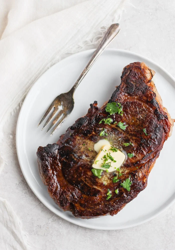

Steak

Description
This is a delicious steak recipe. I use it to make all my steaks.
Steak is very good for you because it contains protein.
This is a good thing, especially if you are over 40.
Ingredients
- A steak
- Salted butter
- Low-sodium soy sauce
- Spices
Steps
- Marinate the steak in the soy sauce and spices.
- Set the oven to 450 degrees fahrenheit.
- Fry the steak in butter on both sides.
- Place steak on glass baking tray and bake for nine minutes.
- Enjoy!